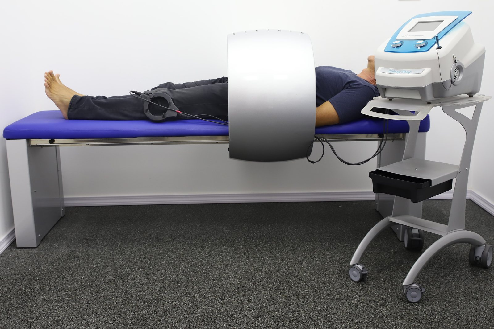

PEMF research
What the research and the physicians say about PEMF.
Pulsed electromagnetic field therapy has been studied for decades. This site brings together the published studies, the opinions of the physicians who reviewed the treatment, and what we've learned running more than 70 PainFree clinics in Israel.

Selected findings
Six studies worth reading first.
Each one opens on PubMed. The full database has dozens more, every entry checked against the original paper.
- 636patients
More pain relief than placebo in osteoarthritis
Cochrane review of 9 randomized trials: electromagnetic field therapy gave about 15 points more pain relief on a 0–100 scale than placebo, with no serious adverse events.
Cochrane Database Syst Rev, 2013PubMed - 1,197patients
Osteoarthritis pain down 60%
Systematic review of 17 randomized trials: PEMF was associated with a 60% drop in VAS pain and a 42% improvement in WOMAC scores, plus better quality of life.
J Clin Med, 2024PubMed - 36%vs 10% with standard care
Joint and soft-tissue pain
Multi-center randomized trial in 120 patients: over 14 days, PEMF cut pain by 36% against 10% with standard care, and pain-medication use fell by 55%.
Pain Ther, 2025PubMed - 1,986men
Erectile function
Meta-analysis of 32 randomized trials: micro-energy treatments, including electromagnetic fields, improved erectile function at 1, 3, 6 and 12 months.
World J Men's Health, 2025PubMed - 24randomized trials
Urinary incontinence
Systematic review and meta-analysis: extracorporeal magnetic stimulation of the pelvic floor significantly improved incontinence symptoms and quality of life compared with control.
Neurourol Urodyn, 2025PubMed - 1,468fracture patients
Fracture healing
Meta-analysis of 22 randomized trials: PEMF raised the healing rate to 79.7% against 64.3% with sham treatment, and reduced fracture pain.
Bioelectromagnetics, 2020PubMed
The physicians
Reviewed by Israeli physicians, in their own words.
Their reviews and opinions were written in Hebrew for our Israeli site. Each is translated into English here and links back to the Hebrew original.
There is no doubt that PEMF technology has a place in rehabilitative treatment for populations suffering from pain and functional impairment in one of the medical conditions mentioned in this review.
Prof. Gabi Zeilig, MDDirector (retired), Department of Neurological Rehabilitation, Sheba Medical Center, Tel HaShomer
- →
Prof. Gabi Zeilig, MD
Director (retired), Department of Neurological Rehabilitation, Sheba Medical Center, Tel HaShomer
- →
Prof. Itamar Grotto
Former Associate Director General of the Israel Ministry of Health and former Head of Public Health Services
- →
Dr. Michael Savion
Senior urologist
- →
Dr. Alexander Ginzburg
Senior geriatrician, former chief geriatrician of the Mishan network
Patients
Patients in Israel, in their own words.
Fourteen short videos recorded with patients at PainFree clinics in Israel. Three are in English. The rest are in Hebrew, with English subtitles.
These are personal experiences, not clinical evidence. Results differ from person to person.
In English
In Hebrew, with English subtitles
Safety and regulation
Straight answers, before anyone asks.
PEMF is non-invasive and produces no heat. It is not used for patients with a pacemaker or another implanted electronic device, during pregnancy, or with an active tumor.
The units PainFree supplies do not hold US FDA clearance. Some other PEMF devices are FDA-cleared for specific indications; clearance always belongs to a specific model and indication. In Israel, the Magnetobox model is listed in the Ministry of Health medical devices registry (AMAR No. 27370034, held by S.Z. Pharma Medical Ltd.). A registry listing is a registration, not an approval.
About PainFree
25 years of treating pain. More than 70 clinics.
PainFree has run pain-relief clinics in Israel for 25 years. Today the network has more than 70 clinics: physiotherapy clinics, physicians, osteopaths, chiropractors and public hospitals.
The system is also in clinical use at Bnai Zion Medical Center in Haifa, where pain physicians and senior physiotherapists run it as part of the hospital's treatment and rehabilitation services.
The professional training of our therapists is led by Uria Moran, a physiotherapist, Lt. Col. (res.) and former head of the IDF Physiotherapy Corps.
Work with PainFree
Bringing this treatment to your patients?
In the United States
We're opening three pre-launch clinics in South Carolina with local entrepreneurs, under their own name. You don't need a medical background.
Anywhere else
Clinics, hospitals, investors and distributors: tell us about yourself and we'll get back to you.